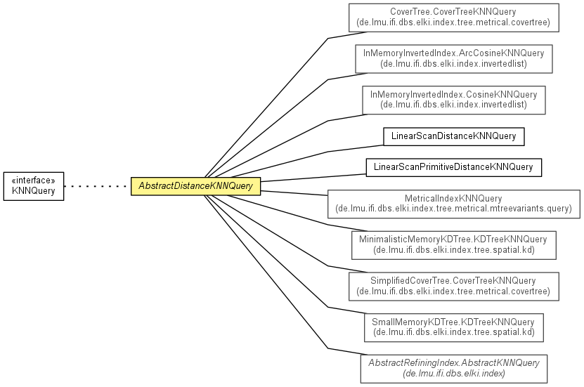

de.lmu.ifi.dbs.elki.database.query.knn
Class AbstractDistanceKNNQuery<O,D extends Distance<D>>
java.lang.Object
 de.lmu.ifi.dbs.elki.database.query.AbstractDataBasedQuery<O>
de.lmu.ifi.dbs.elki.database.query.knn.AbstractDistanceKNNQuery<O,D>
de.lmu.ifi.dbs.elki.database.query.AbstractDataBasedQuery<O>
de.lmu.ifi.dbs.elki.database.query.knn.AbstractDistanceKNNQuery<O,D>
- All Implemented Interfaces:
- DatabaseQuery, KNNQuery<O,D>
- Direct Known Subclasses:
- DoubleDistanceRStarTreeKNNQuery, GenericRStarTreeKNNQuery, LinearScanKNNQuery, MetricalIndexKNNQuery
public abstract class AbstractDistanceKNNQuery<O,D extends Distance<D>>
- extends AbstractDataBasedQuery<O>
- implements KNNQuery<O,D>

Instance for the query on a particular database.
| Methods inherited from class java.lang.Object |
clone, equals, finalize, getClass, hashCode, notify, notifyAll, toString, wait, wait, wait |
distanceQuery
protected DistanceQuery<O,D extends Distance<D>> distanceQuery
- Hold the distance function to be used.
AbstractDistanceKNNQuery
public AbstractDistanceKNNQuery(DistanceQuery<O,D> distanceQuery)
- Constructor.
- Parameters:
distanceQuery - Distance query used
getKNNForDBID
public abstract List<DistanceResultPair<D>> getKNNForDBID(DBID id,
int k)
- Description copied from interface:
KNNQuery
- Get the k nearest neighbors for a particular id.
- Specified by:
getKNNForDBID in interface KNNQuery<O,D extends Distance<D>>
- Parameters:
id - query object IDk - Number of neighbors requested
- Returns:
- neighbors
getKNNForObject
public abstract List<DistanceResultPair<D>> getKNNForObject(O obj,
int k)
- Description copied from interface:
KNNQuery
- Get the k nearest neighbors for a particular id.
- Specified by:
getKNNForObject in interface KNNQuery<O,D extends Distance<D>>
- Parameters:
obj - Query objectk - Number of neighbors requested
- Returns:
- neighbors
getDistanceQuery
public DistanceQuery<O,D> getDistanceQuery()
- Description copied from interface:
KNNQuery
- Get the distance query for this function.
- Specified by:
getDistanceQuery in interface KNNQuery<O,D extends Distance<D>>
getDistanceFactory
public D getDistanceFactory()
- Description copied from interface:
KNNQuery
- Get the distance data type of the function.
- Specified by:
getDistanceFactory in interface KNNQuery<O,D extends Distance<D>>